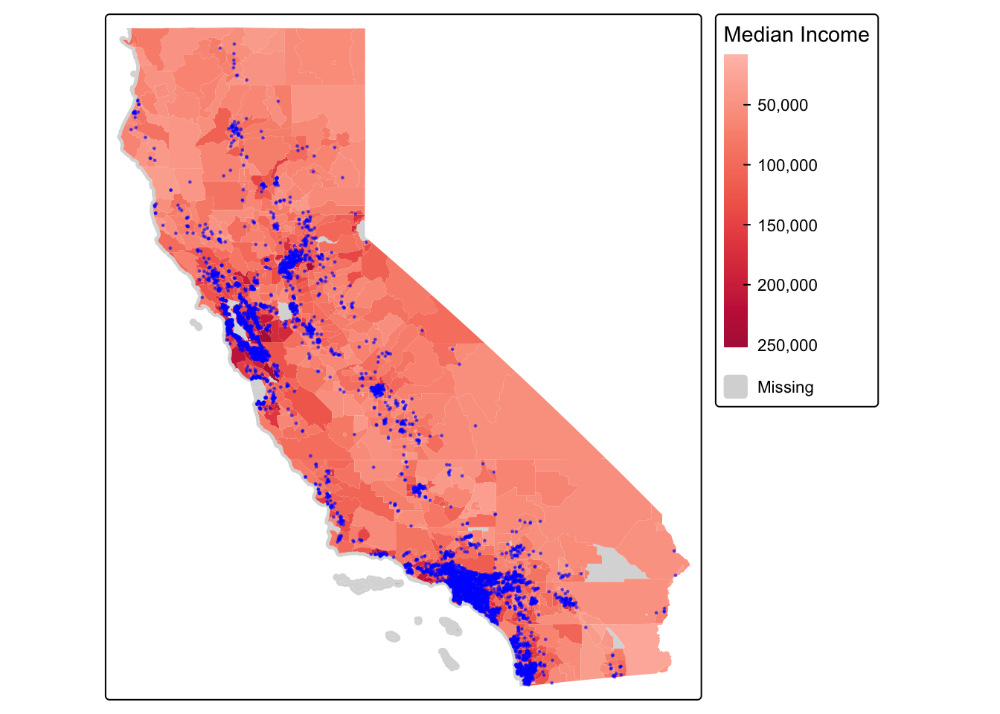
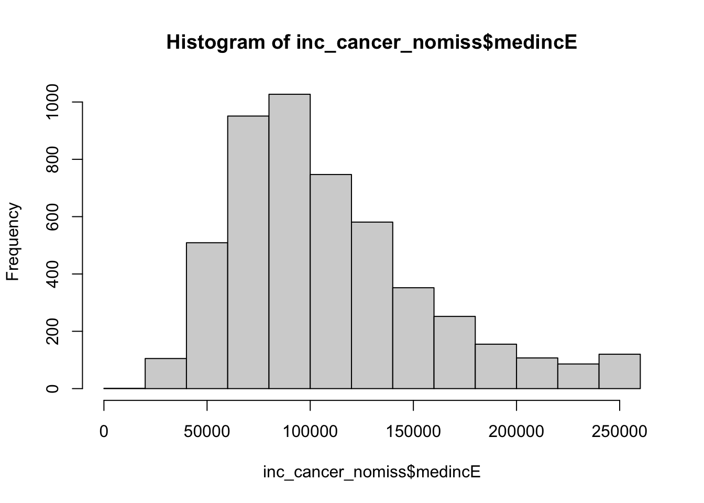

library(sf)
library(MapGAM)
library(tidyverse)
library(tidycensus)
library(flextable)
library(RColorBrewer)
library(tmap)Q1. Bring in CAdata
data(CAdata)
ca_pts <- CAdata
ca_proj <- "+proj=lcc +lat_1=40 +lat_2=41.66666666666666
+lat_0=39.33333333333334 +lon_0=-122 +x_0=2000000
+y_0=500000.0000000002 +ellps=GRS80
+datum=NAD83 +units=m +no_defs"
ca_pts <- st_as_sf(CAdata, coords=c("X","Y"), crs=ca_proj)Q2. Bring in ACS Data
ca.tracts <- get_acs(geography = "tract",
year = 2023,
variables = c(medinc = "B19013_001"),
state = "CA",
output = "wide",
survey = "acs5",
geometry = TRUE,
cb = FALSE)## Getting data from the 2019-2023 5-year ACS## Downloading feature geometry from the Census website. To cache shapefiles for use in future sessions, set `options(tigris_use_cache = TRUE)`.## Using FIPS code '06' for state 'CA'Q3. Check projections. CRS is not the same!
st_crs(ca_pts)## Coordinate Reference System:
## User input: +proj=lcc +lat_1=40 +lat_2=41.66666666666666
## +lat_0=39.33333333333334 +lon_0=-122 +x_0=2000000
## +y_0=500000.0000000002 +ellps=GRS80
## +datum=NAD83 +units=m +no_defs
## wkt:
## PROJCRS["unknown",
## BASEGEOGCRS["unknown",
## DATUM["North American Datum 1983",
## ELLIPSOID["GRS 1980",6378137,298.257222101,
## LENGTHUNIT["metre",1]],
## ID["EPSG",6269]],
## PRIMEM["Greenwich",0,
## ANGLEUNIT["degree",0.0174532925199433],
## ID["EPSG",8901]]],
## CONVERSION["unknown",
## METHOD["Lambert Conic Conformal (2SP)",
## ID["EPSG",9802]],
## PARAMETER["Latitude of false origin",39.3333333333333,
## ANGLEUNIT["degree",0.0174532925199433],
## ID["EPSG",8821]],
## PARAMETER["Longitude of false origin",-122,
## ANGLEUNIT["degree",0.0174532925199433],
## ID["EPSG",8822]],
## PARAMETER["Latitude of 1st standard parallel",40,
## ANGLEUNIT["degree",0.0174532925199433],
## ID["EPSG",8823]],
## PARAMETER["Latitude of 2nd standard parallel",41.6666666666667,
## ANGLEUNIT["degree",0.0174532925199433],
## ID["EPSG",8824]],
## PARAMETER["Easting at false origin",2000000,
## LENGTHUNIT["metre",1],
## ID["EPSG",8826]],
## PARAMETER["Northing at false origin",500000,
## LENGTHUNIT["metre",1],
## ID["EPSG",8827]]],
## CS[Cartesian,2],
## AXIS["(E)",east,
## ORDER[1],
## LENGTHUNIT["metre",1,
## ID["EPSG",9001]]],
## AXIS["(N)",north,
## ORDER[2],
## LENGTHUNIT["metre",1,
## ID["EPSG",9001]]]]st_crs(ca.tracts)## Coordinate Reference System:
## User input: NAD83
## wkt:
## GEOGCRS["NAD83",
## DATUM["North American Datum 1983",
## ELLIPSOID["GRS 1980",6378137,298.257222101,
## LENGTHUNIT["metre",1]]],
## PRIMEM["Greenwich",0,
## ANGLEUNIT["degree",0.0174532925199433]],
## CS[ellipsoidal,2],
## AXIS["latitude",north,
## ORDER[1],
## ANGLEUNIT["degree",0.0174532925199433]],
## AXIS["longitude",east,
## ORDER[2],
## ANGLEUNIT["degree",0.0174532925199433]],
## ID["EPSG",4269]]st_crs(ca.tracts)==st_crs(ca_pts)## [1] FALSEQ4. Reproject. We reproject ca_pts to match the CRS for ca.tracts.
ca_pts_transformed<-st_transform(ca_pts,st_crs(ca.tracts))
st_crs(ca_pts_transformed)==st_crs(ca.tracts)## [1] TRUEQ5. Overlay the map
tmap_mode("plot")## ℹ tmap modes "plot" - "view"ca.inc.map <- tm_shape(ca.tracts) +
tm_polygons(col = "medincE",
style = "cont",
title = "Median Income",
lwd = 0,
alpha=.95,
palette = "Red") +
tm_shape(ca_pts_transformed) +
tm_dots(col = "blue", size = .1, alpha=.5)##
## ── tmap v3 code detected ─────────────────────────────────────────────────────────────────────────────────────────────────
## [v3->v4] `tm_polygons()`: instead of `style = "cont"`, use fill.scale = `tm_scale_continuous()`.
## ℹ Migrate the argument(s) 'palette' (rename to 'values') to 'tm_scale_continuous(<HERE>)'[v3->v4] `tm_polygons()`: use `fill_alpha` instead of `alpha`.[v3->v4] `tm_polygons()`: migrate the argument(s) related to the legend of the map variable `fill` namely 'title' to
## 'fill.legend = tm_legend(<HERE>)'[v3->v4] `tm_dots()`: use `fill_alpha` instead of `alpha`.ca.inc.map## [cols4all] color palettes: use palettes from the R package cols4all. Run `cols4all::c4a_gui()` to explore them. The old
## palette name "Red" is named "red" (in long format "tableau.red")
Q6. Spatially join
inc_cancer = st_join(ca_pts_transformed, ca.tracts) Q7. Drop missing. Have seven missing values.
glimpse(inc_cancer)## Rows: 5,000
## Columns: 9
## $ time <dbl> 1.2759763, 4.2121775, 0.2074870, 3.5099074, 10.2977017, 4.0240033, 6.8591509, 1.2273281, 1.0267289, 4.3…
## $ event <dbl> 1, 1, 1, 1, 0, 1, 0, 1, 1, 1, 1, 1, 0, 1, 1, 1, 1, 1, 0, 0, 1, 1, 0, 1, 1, 0, 1, 0, 1, 1, 1, 1, 0, 1, 0…
## $ AGE <int> 67, 56, 67, 69, 75, 59, 62, 39, 68, 72, 78, 79, 46, 77, 65, 70, 76, 76, 70, 69, 66, 54, 59, 75, 78, 55,…
## $ INS <fct> Mcr, Mcd, Mng, Mcr, Mng, Mcr, Oth, Uni, Uni, Uni, Mcr, Mng, Mcr, Mng, Mcr, Mcr, Unk, Mcr, Mcr, Mng, Mcr…
## $ GEOID <chr> "06055201101", "06037430901", "06065030400", "06013346203", "06055200601", "06071007303", "06077005001"…
## $ NAME <chr> "Census Tract 2011.01; Napa County; California", "Census Tract 4309.01; Los Angeles County; California"…
## $ medincE <dbl> 131528, 84671, 67642, 184271, 135083, 54579, 99694, 60234, 39066, 125078, 107260, 60455, 104803, 151530…
## $ medincM <dbl> 25924, 6623, 10725, 42054, 24336, 6381, 21310, 14455, 5078, 32244, 27468, 11235, 20273, 11111, 15467, 2…
## $ geometry <POINT [°]> POINT (-122.3492 38.3025), POINT (-118.0174 34.14377), POINT (-117.3641 33.96979), POINT (-121.98…summary(inc_cancer$medincE)## Min. 1st Qu. Median Mean 3rd Qu. Max. NAs
## 13735 74028 98000 108740 133056 250001 7inc_cancer_nomiss <- inc_cancer %>%
subset(!is.na(medincE))
summary(inc_cancer_nomiss$medincE)## Min. 1st Qu. Median Mean 3rd Qu. Max.
## 13735 74028 98000 108740 133056 250001Q8. Histogram
hist(inc_cancer_nomiss$medincE)
Q9. Quartiles
walkability_cancer_nomiss <- walkability_cancer_nomiss %>%
mutate(walk_quartile = ntile(Avg_walkin, 4))